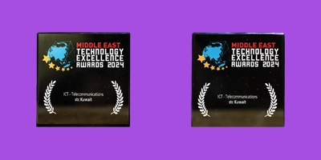

تصنيف stc كأفضل جهة عمل مفضلة في الكويت
احتلت stc المرتبة الأولى كجهة العمل المثالية في الكويت والخيار المفضل للمتخصصين في مجال الهندسة وتكنولوجيا
المعلومات، وذلك بحسب بحث متخصص أجرته مؤسسة يونيفيرسوم مؤخراًً مقارنة مع 19 من أشهر الشركات و العلامات
التجارية الضخمة و القوية في الكويت.

stc تحصد جائزة «التجربة الشاملة في مجال الوصول اللاسلكي الثابت »
حصدت stc جائزة «التجربة الشاملة في مجال الوصول اللاسلكي الثابت » في حفل توزيع جوائز الريادة والتميز ) )LEAD
لمجلس SAMENA لعام 2024 المقامة في دبي، الإمارات العربية المتحدة.

stc تفوز بجائزة « تكنولوجيا المعلومات والاتصالات - الكويت » لتكنولوجيا الجيل الخامس
فازت stc بجائزة « تكنولوجيا المعلومات والاتصالات - الكويت » عن تميزها في تكنولوجيا الجيل الخامس، وذلك في حفل
توزيع جوائز الشرق الأوسط للتميز التكنولوجي - المنصة المخصصة لتكريم رواد الابتكار التكنولوجي والاحتفاء بهم.

stc تحصد جائزة «المسؤولية المجتمعية في ريادة الأعمال » عن مبادرة وياك
حصلت stc على جائزة «أفضل إطار عمل للمسؤولية المجتمعية للشركات في مجال ريادة الأعمال » عن مبادرتها «وياك
– الكويت »2024 من قبل مجلة انترناشيونال فاينانس المرموقة (»IF«) ، وهي مجلة مالية دولية متخصصة في تقييم
مواهب الصناعة ومهارات القيادة. تأتي هذه الجائزة تقديراًً للأنشطة والبرامج التي أطلقتها مبادرة «وياك

stc تفوز بجائزة الابتكار والإنجاز في نمو العملاء بخدمات baity 5G
وجائزة التميز في عمليات الشبكات
أعلنت stc عن فوزها بجائزة ME&CA للابتكار في التحول الرقمي وذلك عن حلول الوصول اللاسلكي الثابت ) )G5 FWA
وجائزة التميز في تشغيل الشبكات وموثوقيتها. وقد تسلمت stc الجوائز خلال منتدى هواوي للتحول التشغيلي 2024 في
إسطنبول- تركيا، تقديرًًا للدور الرائد الذي تلعبه الشركة في تبني وإدارة حلولها الرقمية لخدمة عملائها بشكل أفضل.

solutions by stc تفوز بجائزة أفضل استخدام رقمي في قطاع التكنولوجيا والاتصالات
حصدت solutions by stc ، الذراع المتخصص لشركة الاتصالات الكويتية stc في توفير أحدث الحلول الرقمية
وتكنولوجيا المعلومات للشركات، على جائزة «أفضل استخدام رقمي في قطاع الاتصالات والتكنولوجيا » وذلك ضمن جوائز
MENA Digital Awards ، المخصصة للترويج للابتكار الرقمي وتسليط الضوء على التميز الإعلامي في منطقة الشرق
الأوسط وشمال إفريقيا.

حصلت stc على المركز الثالث في الكويت "كأفضل شركة رائدة
في علاقات المستثمرين" في الكويت
حصلت stc على المركز الثالث كأفضل شركة في مجال علاقات المستثمرين في الكويت لعام 2024 ، وذلك خلال المؤتمر
السنوي لجمعية علاقات المستثمرين في الشرق الأوسط (MEIRA) الذي أقيم في أبو ظبي.

stc و solutions by stc تحصدان جائزتين من جلوبال بيزنس
فازت stc بجائزة «أفضل شركة اتصالات في مجال الحوكمة المؤسسية - الكويت »2024 ، وفازت شركتها التابعة
solutions by stc بجائزة «أفضل منصة رقمية لتجربة العملاء للشركات - My Business - الكويت »2024 وذلك في
حفل توزيع جوائز جوبال بيزنس اوتلوك (GBO) والذي أقيم في دبي، الإمارات العربية المتحدة، بهدف تكريم المؤسسات
التي أظهرت إنجازات بارزة في فئات مختلفة تتعلق بالأعمال والابتكار.